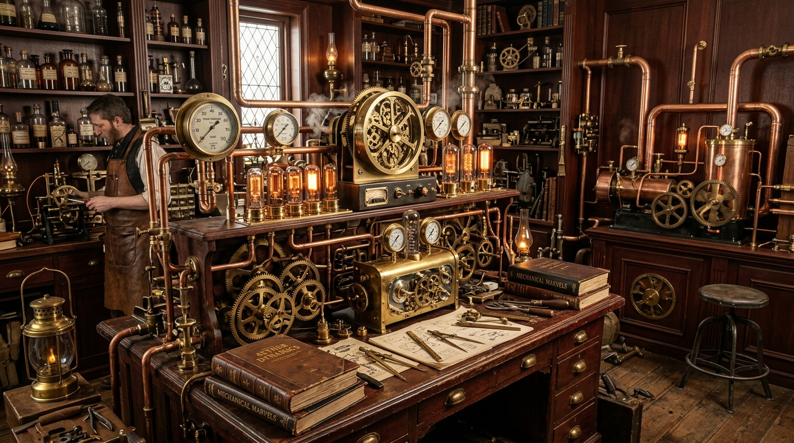

FOLIO NO. 1888-A // DIFFERENCE ENGINE
重构巴贝奇差分机：在纯机械联动齿轮中看见算法的物理具象
每一个黄铜数字轮的进位，都是逻辑门在物理世界的咔哒回响。在电子晶体管问世之前，人类用最精密的钟表发条齿轮，叩开了通用自动计算的大门。
EXAMINE BLUEPRINTS ➔
在差分机与发光真空管的微鸣声中，重温 19 世纪工业革命与蒸汽狂想的古典尊严。记录关于机械算法、自动化钟表机构与古典工程美学的发明笔记。
⚙️ 翻阅机械图卷 (FOLIO 01) ➔每一个黄铜数字轮的进位，都是逻辑门在物理世界的咔哒回响。在电子晶体管问世之前，人类用最精密的钟表发条齿轮，叩开了通用自动计算的大门。
EXAMINE BLUEPRINTS ➔通过调节蒸汽喷嘴与双金属片热膨胀系数，构建完全不依赖电力的模拟稳压反馈回路。探索古典流体力学在现代系统容灾中的哲学启示。
EXAMINE BLUEPRINTS ➔